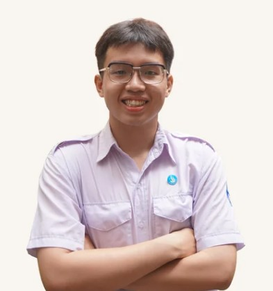

Economics & Data Analytics student at VNU-HCM. Specialising in quantitative modelling, database engineering, and financial data visualisation.

I'm a third-year Economics student specialising in Data Analytics at International University, VNU-HCM. My work bridges finance and technology — building quantitative models, designing databases, and creating dashboards that surface actionable insights.
As a Teaching Assistant supporting 150+ students across macroeconomics and statistics, and Head of Finance at Enactus IU Vietnam, I've developed both technical rigour and the ability to communicate complex data clearly to stakeholders.
I'm currently seeking an internship position to apply my econometrics, SQL, and visualization expertise to both real-world economic and financial challenges.